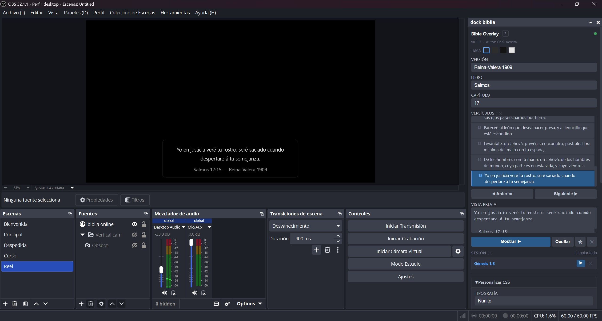

Cómo integrar el panel de control y el overlay en OBS Studio
El panel es la interfaz desde donde seleccionas y muestras los versículos. Se abre en el navegador o se puede anclar como dock dentro de OBS.
Abre esta URL en cualquier navegador mientras OBS esté abierto:
El panel queda integrado en la interfaz de OBS como una ventana acoplable.
En OBS: Vista → Docks → Custom Browser Docks
Haz clic en + y completa:
| Campo | Valor |
|---|---|
| Nombre del dock | Bible Overlay |
| URL | http://localhost:3000/panel.html |
Haz clic en Aplicar y el dock aparece en el menú Vista.

El overlay es lo que aparece sobre el video en el stream. Se agrega como un Browser Source en cada escena donde quieres que aparezcan los versículos.
En el panel Fuentes de OBS, haz clic en + y elige Navegador.
| Propiedad | Valor recomendado |
|---|---|
| Ancho | 1920 (o el ancho de tu escena) |
| Alto | 1080 (o el alto de tu escena) |
| FPS | 30 |
| Apagar cuando no sea visible | Desactivado |
| Refrescar al activar escena | Desactivado |
| CSS personalizado | Dejar vacío |
Arrastra el Browser Source al tope del listado de fuentes de la escena para que aparezca por encima del video. Ajusta el tamaño para que ocupe toda la escena (clic derecho → Transformar → Ajustar a pantalla).
Ejecuta obs-bible-overlay.exe. El panel se abre automáticamente en el navegador y aparece el ícono en la bandeja del sistema. Si configuraste la opción B de instalacion y vas a controlar el panel desde el dock de OBS puedes cerrar el navegador sin problemas.
En el panel: elige la versión, el libro y el capítulo. Haz clic en el versículo que deseas mostrar.
Haz clic en Mostrar ▶ (o presiona Enter). El versículo aparece en el overlay con animación.
Haz clic en Ocultar para que el versículo desaparezca del overlay.